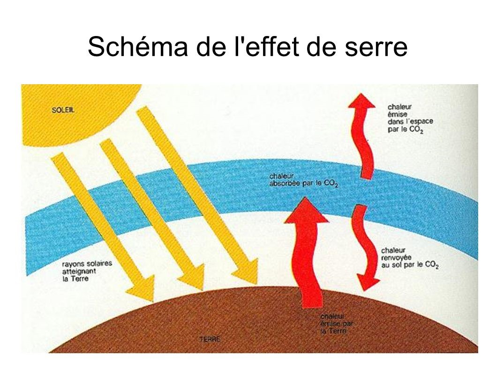

L'histoire de la première voiture éléctrique
La voiture électrique n’émet pas de CO2 lorsqu’elle roule. Le CO2 c’est un gaz produit lorsqu’on brûle de l’énergie fossile (charbon, pétrole, essence, diesel…). Le CO2 agit sur l’effet de serre.
L’effet de serre est un phénomène naturellement présent à la surface de notre planète. La valeur d’eau ainsi que de nombreux gaz comme le dioxyde de carbone ainsi que le méthane participent au réchauffement de la Terre. Ce phénomène rend notre planète plus hospitalière et favorise le développement de la vie. Cependant, depuis la révolution industrielle l’Homme brûle de nombreux combustibles fossiles qui relâchent dans l’atmosphère du dioxyde de carbone lors de la combustion. Ce gaz à effet de serre retient la chaleur nous parvenant du soleil. Le rayonnement infrarouge, ne pouvant plus s’échapper dans l’espace, reste alors confiné dans l’atmosphère terrestre, réchauffant petit à petit notre planète : c’est le réchauffement climatique.
Donc le réchauffement climatique est un phénomène global de transformation du climat caractérisé par une augmentation générale des températures moyennes.

Avant même d’être mise sur la route, la voiture électrique a déjà produite un paquet de CO2.
50 % de CO2 de plus à la production qu’une voiture thermique. La construction d’un moteur électrique et d’une batterie demande davantage de matière première. Ces matières premières sont notamment ce que l’on appelle des métaux rares comme le cobalt, le lithium, le graphite, le manganèse, le nickel… Des métaux recherchés pour leur propriété chimique unique mais dont l’extraction demande beaucoup d’énergie.
Par exemple les mines de lithium utilisent énormément d’eau pour extraire ce minerai et 80% de la production mondiale se trouvent en Amérique latine (en Argentine, au Chili et en Bolivie) dans des régions arides. Ce sont les habitants de ces régions lui souffrent le plus de tout ça. Les conditions de travail des ouvriers sont déplorables et les produits chimiques sont massivement utilisés dans l’extraction du lithium.
Quant au cobalt, c’est en Afrique qu’on l’extrait le plus et plus précisément en république démocratique du Congo. La réglementation de cette industrie qui est quasiment inexistant. Les mineurs travaillent dans des conditions extrêmement dangereuses et parfois ce sont même les enfants qui creusent. Les accidents sont très fréquents et les victimes nombreuses.
Le cobalt est sans doute le métal le plus problématique pour le développement du véhicule électrique. Avec une production et des réserves très concentrées géographiquement dans une zone dont la stabilité politique et le respect de normes sociales et environnementales sont régulièrement questionnés, la stabilité des approvisionnements pourrait être difficile à assurer. à cela s’ajoute le fait que le cobalt est rarement un métal extrait seul, ce qui rend le développement de son extraction tributaire d’autres secteurs d’activité.
D’autre part pour fonctionner la voiture électrique consomme de l’électricité. L’électricité provient majoritairement du nucléaire ou des centrales à charbon.

La voiture électrique n’est pas vraiment plus égologique, elle ne fait même que déplacer le problème. En bout de chaine, les Berlinois, New-Yorkais ou Pékinois ne sont peut-être plus intoxiqués par les pots d’échappement. Mais la pollution est toujours produite, un peu plus loin, dans les lieux de production d’énergie, en dehors des villes. Alors en France, en revanche, la situation est différente. Chez nous, la source principale d’énergie, c’est le nucléaire. Et même s’il pose d’autres problèmes, le nucléaire ne produit pas de CO2. Donc si une voiture électrique produit beaucoup de CO2 lors de sa construction, elle n’en produit pas ensuite Alors qu’une voiture thermique, elle, en produit toute sa vie. Au bout de 30 000 km à 40 000 km, du fait de l’avantage à l’usage du véhicule électrique, le bilan carbone entre les deux types de voitures de véhicules s’équilibre, entre le thermique et l’électrique. Sachant qu’en moyenne, un conducteur français parcourt 13 000 km chaque année, il faut donc environ 3 ans pour qu’une voiture électrique soit moins néfaste qu’une voiture thermique. Dans un scénario où l’énergie qui a produit l’électricité ne vient pas des énergies fossiles, une voiture électrique produit deux fois moins de CO2 qu’une voiture thermique. Même si pour l’instant ce scénario n’est pas applicable à nos sociétés, cela est en train de changer puisque l’énergie renouvelable prend de plus en plus de place ; mais la transition est lente.

Quand est-il de la voiture à hydrogène fonctionnant avec une PAC ?
L'hydrogène n'est pas à proprement parler une source d'énergie, mais un vecteur, tout comme l'électricité : il sert à transporter l'énergie produite par une source primaire (pétrole, uranium) jusqu'aux usagés. Utilisé dans une pile à combustible, son seul déchet est de l'eau. Pour déterminer si l'usage de l'hydrogène est propre (sans polluants ni gaz à effet de serre), il faut prendre en compte son cycle du puits à la roue, c'est-à-dire de sa production à son utilisation. Car si l'hydrogène est abondant, il est rarement pur dans la nature. Pour le séparer des autres éléments (carbone, oxygène...), il faut de l'énergie. De même, comme l'hydrogène est un gaz très peu dense, il doit être comprimé ou liquéfié, ce qui nécessite encore de l'énergie.
Donc si cette énergie est relativement propre (énergie solaire, éolienne), l'utilisation de l'hydrogène l'est aussi. Si en revanche cette énergie est produite par des centrales à charbon ou nucléaire, l'usage de l'hydrogène est responsable de leurs pollutions et ne peut être considéré comme propre. Or de manière générale l’électricité vient du charbon qui est polluant, donc cela renvoi à la question de la production de l’électricité que nous avons traité précédemment.